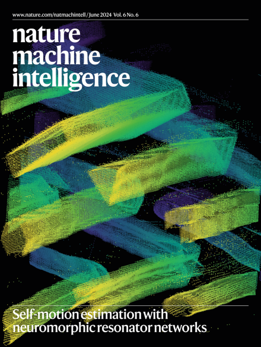
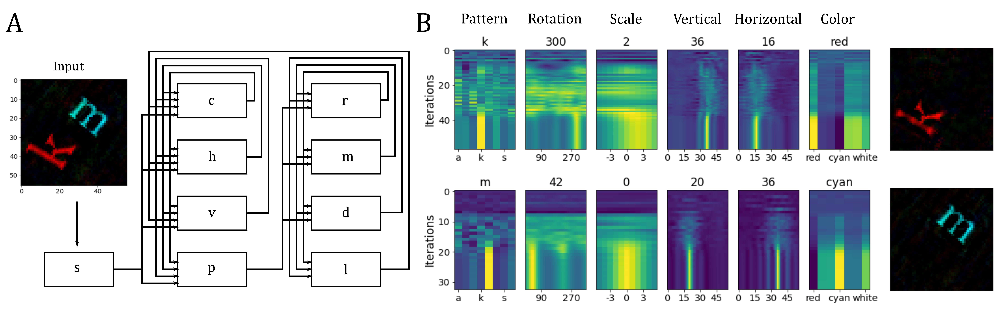
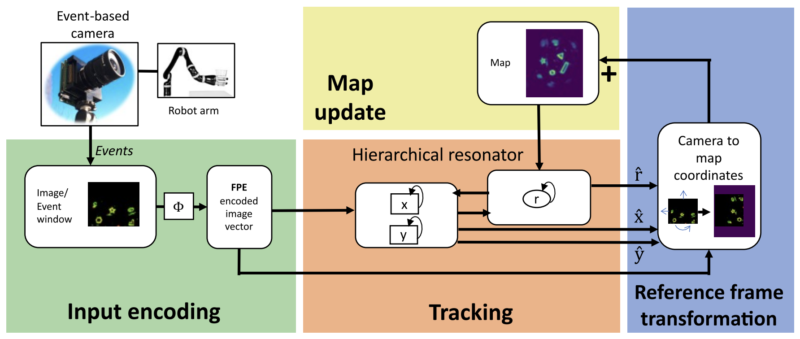

Resonator Networks#
The resonator network is an exciting new neural network design that is capable of solving challenging computational problems. The resonator network is unlike most neural networks in AI and in computational neuroscience.
The resonator is for solving combinatorial search problems or factorization problems. We believe that many problems in perception and cognition are of this variety and that these problems aren’t suitable for standard deep learning neural networks. Factorization problems can be memorized, but they do not generalize in the same way as standard pattern matching or classification problems.
The architecture of the resonator network also includes an operation between neural populations that is very unfamiliar to both deep learning and computational neuroscience: the binding operation. The binding operation is a way of expressing combinatoric conjunctions of features into a vector space. This is what gives VSA flexibility to express data structures in neural activity.
The opposite of binding is factorization. This relates to many fundamental problems in computer science, like the factorization of prime numbers and other combinatorial NP problems. These problems are challenging due to their scaling and complexity, but are not really conceptually hard for a computer to solve, they just require a lot of computational work. In fact, algorithmically, these problems are some of the easiest – you just have to brute force guess and check all possible factors to decide which factors are present in a given factorization problem.
The resonator network’s approach to solving such problems uses the VSA principle of superposition. With superposition, neural populations can hold multiple guesses for one of the factors and test them simultaneously. However, the price of simultaneous inference is crosstalk noise. The resonator network performs such an inference step iteratively, and uses attractor dynamics to “clean-up” the result of each inference step. By iteratively performing inference and clean-up the resonator network searches through the combinatoric solution space, and when it finds the right combination the dynamics rapidly converge to a stable state.
Resonator Networks 1: An efficient solution for factorization of distributed data structures#
E. Paxon Frady, Spencer Kent, Bruno A. Olshausen, Friedrich T. Sommer. (2020) Neural Computation. 32(12):2311-2331.

Summary#
In the first resonator network paper, we explain the concept behind the resonator network – search in superposition. We describe how VSA can be used to create data structures, like a tree, and show that fully manipulating this data structure often leads to a combinatoric search problem. For a tree data structure, the problem is to find a certain item that is in the tree, and we describe how tree search can be done with the resonator network.
We also describe how simple geometric transformations onto objects are fundamentally bindings between the object shape and its transformation. This means that understanding a simple scene, of e.g., numbers positioned in different locations, can indeed be expressed as a factorization problem.
Links#
Resonator Networks 2: Factorization performance and capacity compared to optimization-based methods#
Spencer Kent, E. Paxon Frady, Friedrich T. Sommer, Bruno A. Olshausen. (2020) Neural Computation 32(12): 2332-2388.

Summary#
In the second paper on resonator networks, we examine the empirical performance on a standardized vector factorization problem and compare the resonator network to conventional optimization methods. We show that the resonator network is solving much more complex problems than what conventional approaches can handle.
We speculate that this performance improvement is due to the fact that the resonator network does not have a conventional energy landscape. Unlike the optimization methods, which always follow the local gradient of an energy landscape, the resonator network has dynamics that cannot be described by an energy or lyapunov function. This means that there are poentially chaotic and cyclic states in the network, and it cannot be guaranteed to converge. However, the performance limitation of most optimization methods is due to getting stuck in local-minima.
While the resonator network cannot be mathematically guaranteed to converge, we see empirically that it does converge to the right answer with high-probability if the problem size is under the network’s operational capacity. The operational capacity is based on the total number of combinations in the search space. We show that as the size of the resonator network scales up, the operational capacity of the network increases quadratically.
Links#
Integer Factorization with Compositional Distributed Representations#
Denis Kleyko, Connor Bybee, Amir Khosrowshahi, Dmitri E. Nikonov, Friedrich T. Sommer, E. Paxon Frady. (2022) Neuro-inspired computational elements conference.

Summary#
Factoring integers is a well-known problem in computer science and in fact it serves as the back-bone of encryption. This is one of many problems that are “NP” or non-polynomial, which means that you effectively have to use brute-force methods to find the answer. As the problems get harder and harder, these brute-force methods scale exponentially in complexity, which can be virutally impossible to solve.
The problem of integer factorization is fundamentally related to the problem of vector factorization that the resonator network can solve. In this paper, we explain new methods for mapping integers onto VSA vectors based on fractional power encodings. The key is that through this method we can generate VSA vectors that represent integers, and, importantly, the binding of vectors creates a vector representation that is the product of the integers. This means that by solving vector factorization, we can solve integer factorization.
We explain how to set-up the resonator network to solve the factorization of semi-primes and other composite numbers and measure the performance and scaling empirically.
Links#

Neuromorphic Visual Scene Understanding with Resonator Networks#
Alpha Renner, Lazar Supic, Andreea Danielescu, Giacomo Indiveri, Bruno A. Olshausen, Yulia Sandamirskaya, Friedrich T. Sommer, E. Paxon Frady. (2024) Nature Machine Intelligence 6, 641–652.

Summary#
In this work, we describe methods for inferring the factors of variation of simple objects based on a generative model. This extends classic ideas in cognition based on the brain performing an “analysis by synthesis” of the environment. The computational challenge that the brain solves is the process of inverting the generative model of the scene. We show how one can use distributed vector representations to build the generative model, and how the resonator network can then be used to find the individual factors of variation that compose each object. We start by explaining how vector binding operations can act as the equivariant transform to operations like translation, and we show how the resonator network can be designed to localize objects. We then explain how non-commutative transforms, such as rotation and scaling can be used in conjunction mediated by the log-polar transform. This type of scene can then be inverted by a hierarchical resonator network. Finally, we explain how all of this can be implemented on neuromorphic hardware, with a simple demonstration of the system working on Intel’s Loihi neuromorphic computing chip.
Links#
Visual Odometry with Neuromorphic Resonator Networks#
Alpha Renner, Lazar Supic, Andreea Danielescu, Giacomo Indiveri, E. Paxon Frady, Friedrich T. Sommer, Yulia Sandamirskaya. (2024) Nature Machine Intelligence 6, 653–663.

Summary#
With the ability to use the resonator network to extract the transaltion, rotation and scaling of objects in a visual scene, we extended the network to tackle the problem of visual odometry in robotics. Visual odometry is the task of using vision to track motion through space. Visual motion tracking has an advantage over integration of inertial measurements as it is less prone to drift. In this use-case, the resonator network is augmented wi/th a spatial map of the environment that it integrates over time. The map is used by the resonator network to align the visual input and factor out the differences in rotation and translation. The estimates in turn are used to incorporate the visual input into the map. This is also known as simultaneous localization and mapping. We benchmarked this network on a few datasets for visual odometry and show how the resonator network